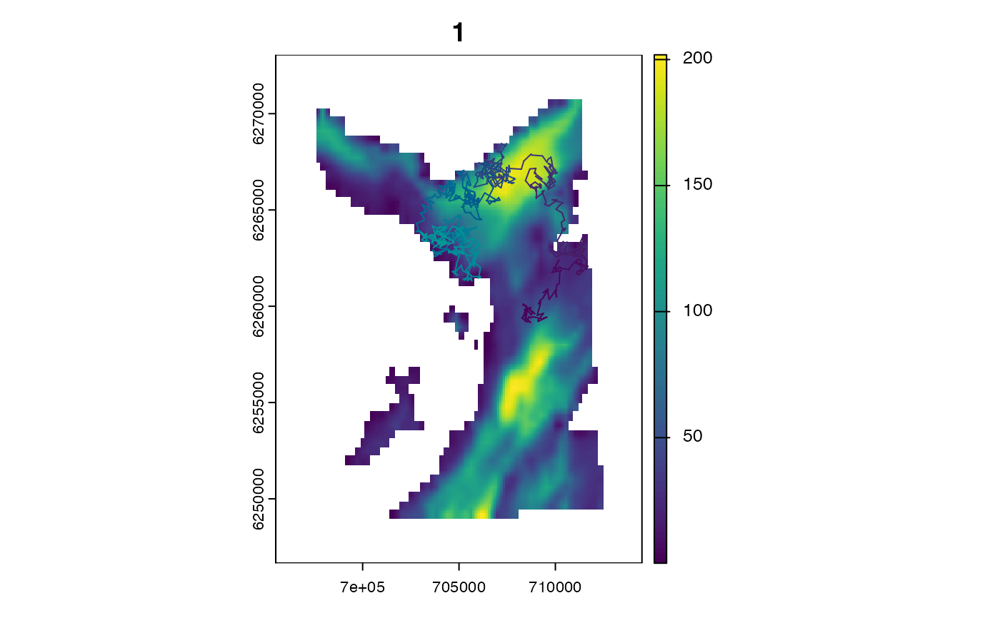

Use set_map() at the start of your workflow to export maps of the study area to Julia.
Arguments
- .x
A map, supplied as:
A
terra::SpatRaster, supported on Windows and MacOS;A
characterstring specifying the file path to a raster, supported on Windows, MacOS and Linux;
- .as_Raster
A
logicalinput that defines whether or not to read the map as aRaster(see Details).- .as_GeoArray
A
logicalinput that defines whether or not to read the map asGeoArray(see Details).
Details
set_map() exports map(s) of the study area to Julia.
Maps must be georeferenced rasters. A planar (e.g., Universal Transverse Mercator) projection with coordinates in metres is currently required.
Maps are used to (a) simulate initial location(s) for an individual and (b) restrict subsequent, simulated movements to habitable areas (see ModelMove). NAs define inhospitable regions (such as land). Initial location(s) and subsequent movements are restricted to non-NA regions.
For computational reasons, two maps are defined in Julia. The map from which initial locations are sampled is exported as a Raster (named env_init). The map incorporated into the movement model is exported as a GeoArray (named env). Usually, both maps are identical. For this reason, under the default options, .x is exported as both a Raster (.as_Raster = TRUE) and a GeoArray (.as_GeoArray = TRUE).
To simulate initial locations from a different map from that used to bound individual movements, export the two maps separately, via:
See also
julia_connect()to connect toJulia;set_seed()to set a seed inRandJulia;set_map()to export map(s) toJulia;sim_path_walk()to simulate movements on the map;pf_filter()to reconstruct movements on the map;set_vmap()to set a 'validity map` for particle smoothing;
Examples
if (patter_run()) {
julia_connect()
set_seed()
mapfile <- system.file("extdata", "dat_gebco.tif",
package = "patter", mustWork = TRUE)
map <- terra::rast(mapfile)
#### Example (1): Set maps using a SpatRaster
set_map(map)
#### Example (2): Set maps using a file path to a raster
# Use this option on Linux
set_map(mapfile)
#### Example (3): Distinguish between initial and movement maps
# Set 'initial' map from which initial locations are sampled
map_init <- terra::setValues(map, NA)
cell <- 25595
map_init[cell] <- 1
set_map(map_init, .as_Raster = TRUE, .as_GeoArray = FALSE)
# Set map for the movement model
set_map(map, .as_Raster = FALSE, .as_GeoArray = TRUE)
# Simulate a movement path
path <- sim_path_walk(.map = map,
.timeline = seq(as.POSIXct("2016-01-01", tz = "UTC"),
length.out = 1000L, by = "2 mins"))
# The simulated path starts from the set location in `map_init`:
stopifnot(all(
path$x[1] == terra::xFromCell(map, cell),
path$y[1] == terra::yFromCell(map, cell),
path$map_value[1] == terra::extract(map_init, cell)$map_value)
)
}
#> `patter::julia_connect()` called @ 2025-04-22 09:32:16...
#> ... Running `Julia` setup via `JuliaCall::julia_setup()`...
#> ... Validating Julia installation...
#> ... Setting up Julia project...
#> ... Handling dependencies...
#> ... `Julia` set up with 11 thread(s).
#> `patter::julia_connect()` call ended @ 2025-04-22 09:32:16 (duration: ~0 sec(s)).
#> Warning: Use `seq.POSIXt()` with `from`, `to` and `by` rather than `length.out` for faster handling of time stamps.
